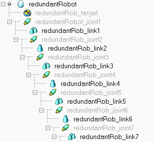
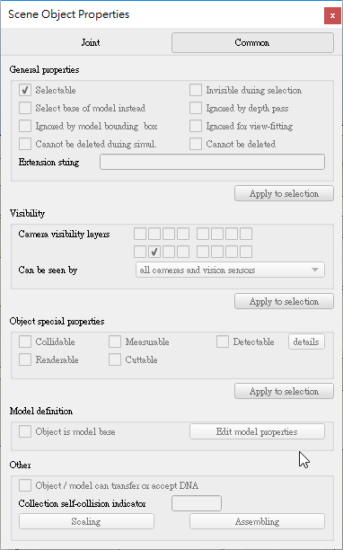
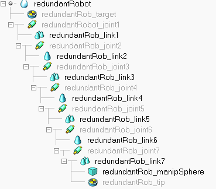
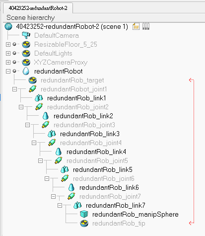
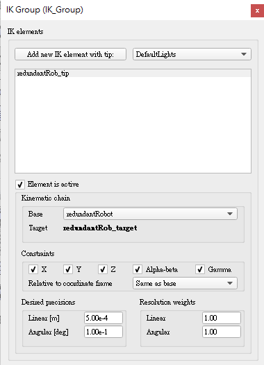
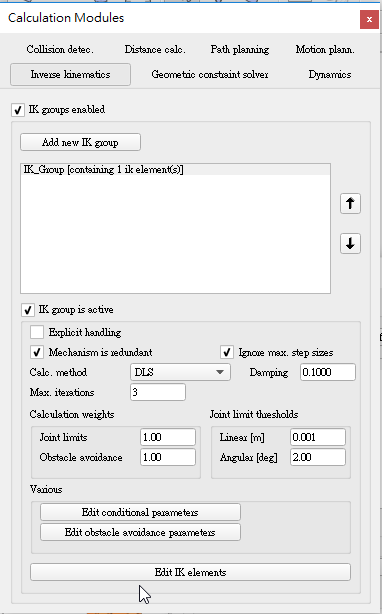

2018/12/14第十四週
二、v-rep_InverseKinematics(機械手臂)
進入mde.tw→2018 Fall 期末專案示範網站→課程專題→電腦輔助設計議題→Inverse Kinematics→v-rep_InverseKinematics(機械手臂)
1.先匯入要編輯的檔案
點選 [Menu bar --> File --> Import --> Mesh...]打開名為“redundantManipulator.stl”的檔案。
2.導入的機械手臂視為一個整體，因此在選取時會顯示全選狀態，為了方便後面操作，可以針對單一部件做選取，必須將各部件進行分解
點選 [Menu bar --> Edit --> Grouping/Merging --> Divide selected shapes]就可分解各部件了。
3.接著要幫我們的機械手臂進行上色，目的是為了有良好的外觀，以及方便往後編輯時方便操作
點選要上色的零件並雙擊-->點選Adjust color-->ambient/diffuse component-->調整所需顏色-->Apply to selection即可。
p.s：顏色形狀對話框的一部分。也可以隨意調整其他視覺參數，例如“ Shading angle”、“ Edges width”或“ Edges color”
4.編輯好各部件的顏色之後要將我們所有部件的邊界框架與絕對框架對齊
點選[Menu bar --> Edit --> Bounding box alignment --> Align selected shapes' coordinate frame with world]
5.在旋轉處插入旋轉軸總共有7個
點選[Menu bar --> Add --> Joint --> Revolute]即可叫出選轉軸，叫出來的旋轉軸的默認位置皆是垂直在(0,0,0)處，因此須點選旋轉軸，然後按住Ctrl選擇要插入的部件，點選[position dialog-->position-->Apply to selection]即可完成，重複這個步驟直到7個旋轉軸的設定完成。
p.s：若需要旋轉旋轉軸則須點選 orientation dialog裡的orientation選擇要旋轉的角度並設定後點選 Apply to selection。
6.調整旋轉軸長度直徑，以確保清楚可見旋轉軸的位置。
7.接著要對屬於同一個剛性實體的部位進行分組，將途中設有轉軸的部分5個部件分為一組
選擇要鏈接的部件點選 [Menu bar --> Edit --> Grouping/Merging --> Group selected shapes]即可將各部件組合為一個部件
8.合併完後將各部件依照教學檔案重新命名場景中的所有部件方便建構運動鏈。
只需雙擊場景中的部件名稱即可編輯
9.依據剛剛所重新命名的部件由下到上(1~7)的順序建構運動鏈
從tip到base，選擇"redundantRob_link7"組合部件，按住ctrl鍵，對"redundantRob_joint7"旋轉軸，然後點選[Menu bar --> Edit --> Make last selected object parent]或是也可以用滑鼠拖動到場景結構層次中，依照以上步驟將運動鏈建構起來，完成後如下圖。

10.接著要將我們7個旋轉軸隱藏
選擇所有旋轉軸→點選Scene object properties→Joint Mode→inverse kinematics mode→click Apply to selection接著打開Common(對象公共屬性)，在 Visibility裡將第2層關閉並勾選第10層如下圖所示，這樣我們的7個旋轉軸就隱藏了。
p.s如果要暫時啟用/禁用某些圖層，請查看圖層選擇對話框。

11.定義操縱器的inverse kinematics，在v-rep中，IK任務需要指定以下元素：
*a 用"tip" dummy and a "base" object描述運動鏈.
*A "tip" dummy 將被"target"dummy約束.
目前已經有了"base"object("redundantRobot")，添加一個dummy object，並命名為“redundantRob_tip”並移到位置(0.324,0,0.62)。
將"redundantRob_tip"加到“redundantRob_link7”下，如下圖所示。

12.接著將建立"target" dummy：將"redundantRob_tip"複製貼上，將副本重新命名為“redundantRob_target”。
13.要讓v-rep知道“redundantRob_tip”和“redundantRob_target”是inverse kinematics的分辨率的尖端目標對。
14.雙擊場景層次結構中的“redundantRob_tip”圖標，打開dummy object對話框，在Dummy-dummy linking部分中，將“redundantRob_target”指定為Linked dummy，如此兩者在場景層次中繪有紅線連接，表示在同一對話框中，鏈接類型已經是IK。

15.此階段用於定義inverse kinematics的所有元素都已準備完成，再來要加入我們的IK組：
打開Inverse kinematics dialog→單擊Add new IK group→列表中顯示IK_Group→單擊Edit IK elements則會打開IK element dialog對話框→Add new IK element with tip旁的按鈕選擇"redundantRob_tip"，並按下Add new IK element with tip→接著往下看在Kinematic chain的欄位將"redundantRobot"設為base→最後確認Constraints部分中(檢查Alpha-Beta和Gamma)如下圖所示，如此我們的"tip" dummy在位置及方向上都會遵循 "target" dummy。接著回到原來的部分如下圖所示點選Mechanism is redundant但在此階段，由於未定義旋轉軸限製或避障參數，因此不會產生任何差異。
 
16.增加球體在與"redundantRob_target"相同位置處→設定碰撞檢測→設定集合
17.模擬